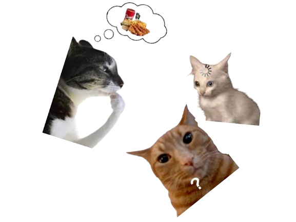

Omski's blog?
A collection of updates, thoughts, and ideas that I have. 
-
2025-04-11
What a day. Woke up sleepy to the point of feeling like I will fall asleep while walking. Work was messy but it is what it is. Came back, helped da gf clean up. Finally sat down to work on the site, thought to myself "Today I'll add two pages for my hobbies, gaming and art, and I'll make it a drop-down menu from the About section of the header!". Yeah, no. Didn't even start the pages, but it's fine. I've been working for around 4 hours on the drop-down menu and still did not manage to make it work the way I want it to. Current version is very rough, I'm leaving it as is so I could come back to it. Positive thing, I tried to actually ask the CoPilot to point me in the directions of solving the issues in the code instead of just copying it. Atleast did so for a while, but this drop-down is taking too long. Will come back to it later tho, I told myself two hours ago that I'll go play some TF2. Gotta think too.
2025-04-10
I've been doing some more work, to fix the re-sizing issue with different screens was a hassle, but I'm glad that GitHub CoPilot exists, makes this way more easier and faster, which let's me put more of creativeness to work while still inspired to work on the site. I'm interested in seeing what the future holds for this website and hope that I don't quit on it. Should add something about my hobbies.
-
2025-04-09
The day I started working on this website. Inspired by Bing Soy, I think it was a good idea to rekindle some old flames for art and web programming.